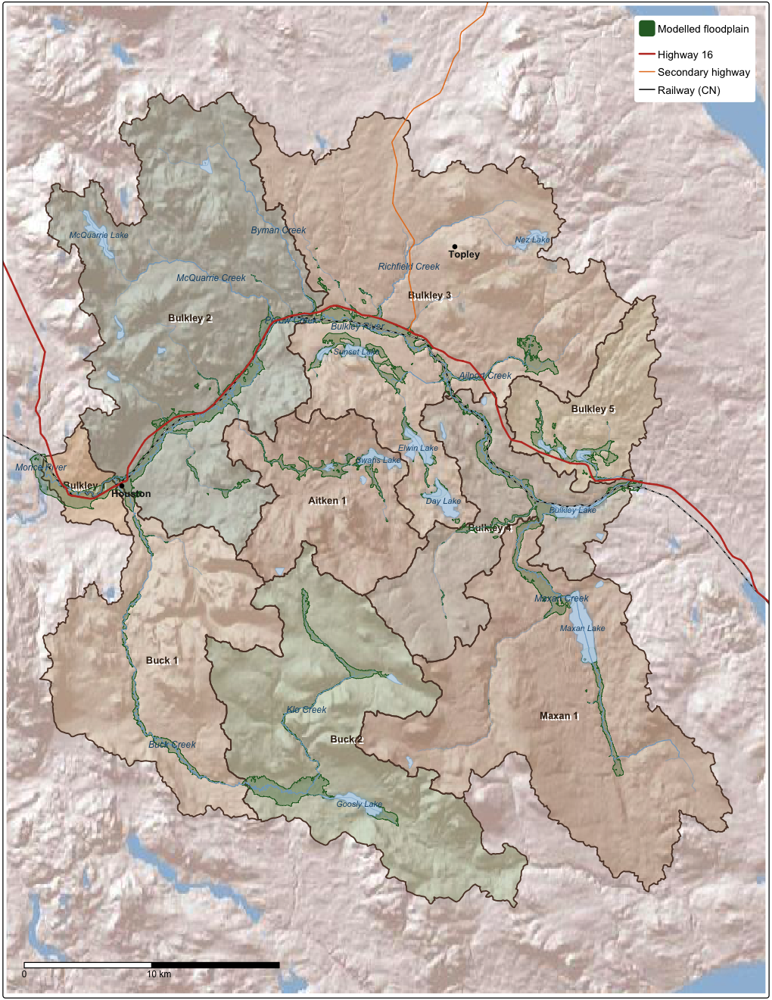
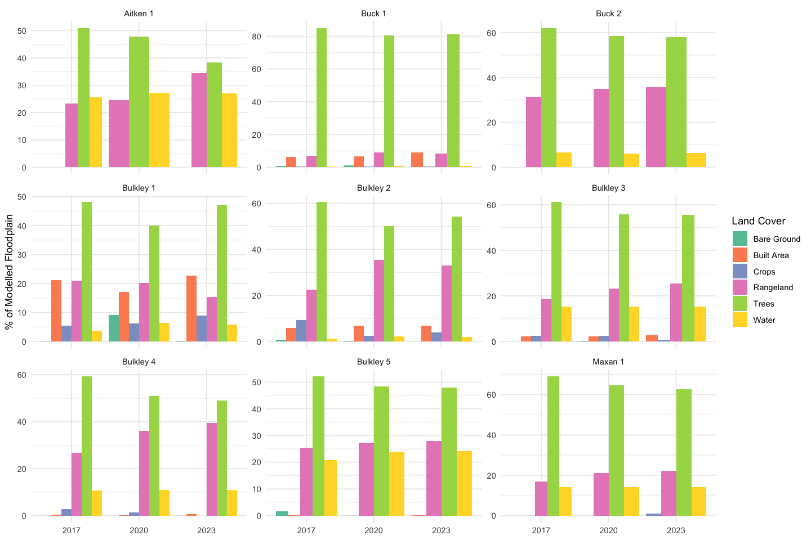
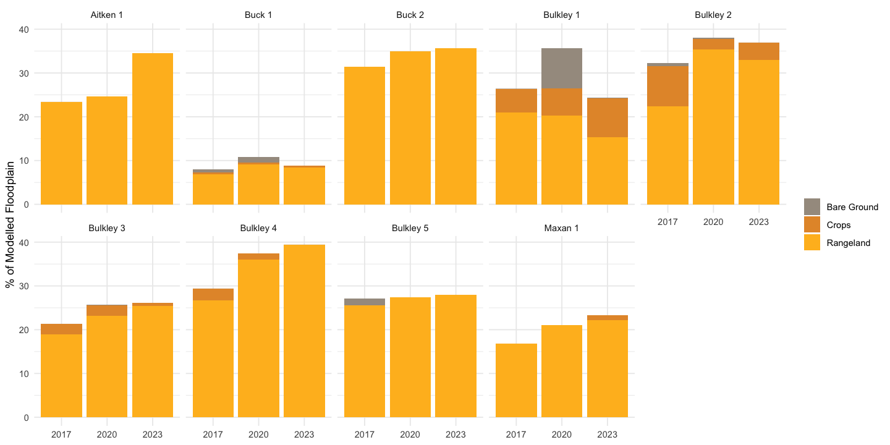
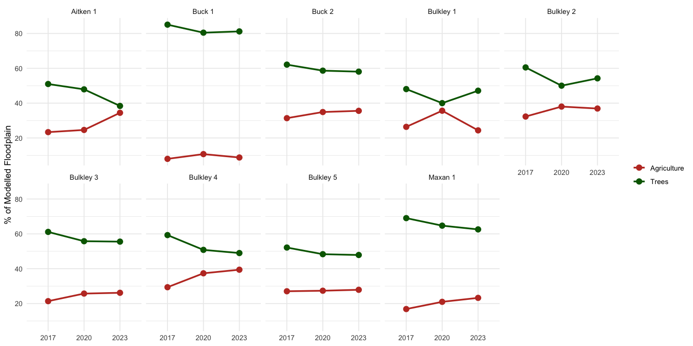
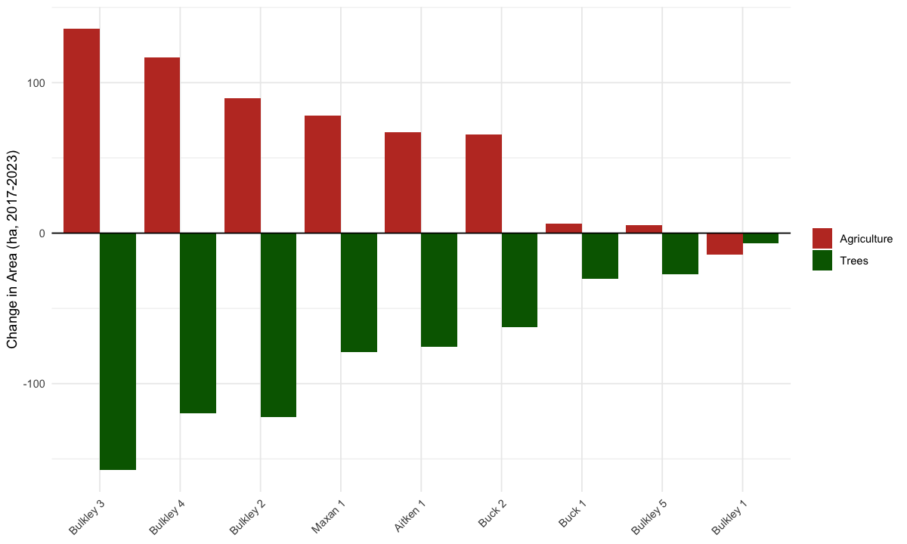

Appendix - Land Use Land Cover Change
library(drift)
library(sf)
library(terra)
library(tmap)
library(maptiles)
library(ggplot2)
library(dplyr)
library(tidyr)
sf::sf_use_s2(FALSE)
terra::terraOptions(threads = 12)
# Sub-basins from watershed picker (transform to 4326 to match other layers)
subbasins <- sf::st_read(
here::here("data", "lulc", "subbasins.gpkg"),
quiet = TRUE
) |> sf::st_transform(4326)
# Floodplain AOI
floodplain <- sf::st_read(
here::here("data", "lulc", "floodplain_neexdzii_co.gpkg"),
quiet = TRUE
) |> sf::st_transform(4326)
# Label sub-basins: auto-number by stream name, 1 = mouth (lowest DRM)
subbasins <- subbasins |>
dplyr::arrange(gnis_name, drm) |>
dplyr::mutate(
stream_short = sub(" (Creek|River|Lake)$", "", gnis_name),
seq = ave(seq_len(dplyr::n()), gnis_name, FUN = seq_along),
label = paste(stream_short, seq)
)5.1 Modelled Floodplain
Land cover change is assessed within the modelled floodplain — the valley bottom area delineated by the Valley Confinement Algorithm (flooded package) for co rearing/spawning habitat on streams of 4th order and greater. The modelled floodplain covers 112.4 km² along the Neexdzii Kwa (Bulkley River) and tributaries. All percentages and areas reported below refer to land cover within this modelled floodplain, not the full watershed.
cache <- here::here("data", "spatial")
streams_all <- readRDS(file.path(cache, "streams.rds"))
lakes <- readRDS(file.path(cache, "lakes.rds"))
roads <- readRDS(file.path(cache, "roads.rds"))
railway <- readRDS(file.path(cache, "railway.rds"))
towns <- sf::st_sf(
name = c("Houston", "Smithers", "Burns Lake", "Topley"),
geometry = sf::st_sfc(
sf::st_point(c(-126.648, 54.398)),
sf::st_point(c(-127.176, 54.779)),
sf::st_point(c(-125.764, 54.230)),
sf::st_point(c(-126.246, 54.566)),
crs = 4326
)
)
# Dissolved roads by route
roads_dissolved <- roads |>
dplyr::filter(!is.na(route)) |>
dplyr::group_by(route) |>
dplyr::summarise(geom = sf::st_union(geom), .groups = "drop")
# Bounding box from sub-basins with padding tuned for 8.5x11
bbox <- sf::st_bbox(subbasins)
bbox["ymax"] <- bbox["ymax"] + 0.06
bbox["ymin"] <- bbox["ymin"] - 0.06
bbox["xmin"] <- bbox["xmin"] - 0.04
bbox["xmax"] <- bbox["xmax"] + 0.04
# Clip streams and lakes to bbox
bbox_clip_sf <- sf::st_as_sfc(bbox) |> sf::st_set_crs(4326)
streams_clip <- streams_all |> sf::st_make_valid() |> sf::st_crop(bbox_clip_sf)
lakes_clip <- lakes |> sf::st_make_valid() |> sf::st_crop(bbox_clip_sf)
# Stream labels (5th order+ named)
stream_label_pts <- streams_clip |>
dplyr::filter(!is.na(gnis_name) & stream_order >= 5) |>
dplyr::group_by(gnis_name) |>
dplyr::summarise(geom = sf::st_union(geom), .groups = "drop") |>
dplyr::mutate(geometry = sf::st_point_on_surface(geom)) |>
sf::st_set_geometry("geometry") |>
sf::st_set_crs(4326)
# Lake labels (>1 km²)
lake_labels <- lakes_clip[!is.na(lakes_clip$name) & lakes_clip$area_km2 > 1, ]
# Hillshade basemap
bbox_sf <- sf::st_as_sfc(bbox) |> sf::st_set_crs(4326)
relief <- maptiles::get_tiles(bbox_sf, provider = "Esri.WorldShadedRelief",
zoom = 10, crop = TRUE)
basemap_stars <- stars::st_as_stars(relief)
# Earthy sub-basin palette
earth_pal <- c("#A67C52", "#C4A882", "#8B9E6B", "#D4A76A",
"#7A8B6E", "#BFA07A", "#9B8E6E", "#C2B280")
tmap::tmap_mode("plot")
tmap::tm_shape(basemap_stars, bbox = bbox) +
tmap::tm_rgb() +
# Sub-basins
tmap::tm_shape(subbasins) +
tmap::tm_polygons(
fill = "label",
fill.scale = tmap::tm_scale_categorical(values = earth_pal),
fill_alpha = 0.35,
col = "#5C4033", lwd = 1.5,
fill.legend = tmap::tm_legend(show = FALSE)
) +
tmap::tm_text("label", size = 0.65, col = "#3B2716", fontface = "bold",
options = tmap::opt_tm_text(shadow = TRUE)) +
# Floodplain
tmap::tm_shape(floodplain) +
tmap::tm_polygons(fill = "#2d6a2e", fill_alpha = 0.30,
col = "#2d6a2e", lwd = 0.8) +
# Lakes
tmap::tm_shape(lakes_clip) +
tmap::tm_polygons(fill = "#c6ddf0", col = "#7ba7cc", lwd = 0.4, fill_alpha = 0.85) +
tmap::tm_shape(lake_labels) +
tmap::tm_text("name", size = 0.55, col = "#1a5276", fontface = "italic") +
# Streams
tmap::tm_shape(streams_clip |> dplyr::filter(stream_order >= 4)) +
tmap::tm_lines(col = "#7ba7cc", lwd = 0.4) +
tmap::tm_shape(streams_clip |> dplyr::filter(stream_order >= 5)) +
tmap::tm_lines(col = "#7ba7cc", lwd = 0.8) +
tmap::tm_shape(stream_label_pts) +
tmap::tm_text("gnis_name", size = 0.60, col = "#1a5276", fontface = "italic") +
# Railway
tmap::tm_shape(railway) +
tmap::tm_lines(col = "black", lwd = 1.2) +
tmap::tm_shape(railway) +
tmap::tm_lines(col = "white", lwd = 0.6, lty = "42") +
# Roads
tmap::tm_shape(roads_dissolved |> dplyr::filter(route == "16")) +
tmap::tm_lines(col = "#c0392b", lwd = 2.0) +
tmap::tm_shape(roads_dissolved |> dplyr::filter(route != "16")) +
tmap::tm_lines(col = "#e67e22", lwd = 1.2) +
# Towns
tmap::tm_shape(towns) +
tmap::tm_dots(fill = "black", size = 0.30) +
tmap::tm_text("name", size = 0.65, xmod = 0.8, ymod = -0.6,
col = "grey10", fontface = "bold") +
# Scale bar
tmap::tm_scalebar(breaks = c(0, 10, 20),
position = c("left", "bottom"),
text.size = 0.6) +
# Legend
tmap::tm_add_legend(
type = "polygons",
labels = "Modelled floodplain",
fill = "#2d6a2e",
col = "#2d6a2e",
lwd = 1
) +
tmap::tm_add_legend(
type = "lines",
labels = c("Highway 16", "Secondary highway", "Railway (CN)"),
col = c("#c0392b", "#e67e22", "black"),
lwd = c(2, 1.2, 1.2)
) +
tmap::tm_layout(
frame = TRUE,
inner.margins = c(0.005, 0.005, 0.005, 0.005),
outer.margins = c(0.002, 0.002, 0.002, 0.002),
legend.position = c("right", "top"),
legend.frame = TRUE,
legend.bg.color = "white",
legend.bg.alpha = 0.85
)
Figure 5.1: Sub-basin boundaries and modelled floodplain extent used for land cover analysis.
5.2 Land Cover by Sub-Basin
IO Land Use Land Cover (10 m, Sentinel-2) is classified for 2017, 2020, and 2023 using the drift pipeline. Each sub-basin’s modelled floodplain is analyzed independently.
results <- list()
for (i in seq_len(nrow(subbasins))) {
sb <- subbasins[i, ]
fp_clip <- sf::st_intersection(floodplain, sb) |>
sf::st_collection_extract("POLYGON") |>
sf::st_union() |>
sf::st_sf(geometry = _)
sf::st_crs(fp_clip) <- sf::st_crs(floodplain)
if (nrow(fp_clip) == 0 || as.numeric(sf::st_area(fp_clip)) < 1e4) {
message("Skipping ", sb$label, " — no floodplain overlap")
next
}
message("Processing: ", sb$label)
rasters <- dft_stac_fetch(fp_clip, source = "io-lulc", years = c(2017, 2020, 2023))
classified <- dft_rast_classify(rasters, source = "io-lulc")
summary <- dft_rast_summarize(classified, unit = "ha")
summary$subbasin <- sb$label
results[[i]] <- summary
}
lulc_all <- bind_rows(results)ag_classes <- c("Crops", "Rangeland", "Bare Ground")
# Compute change from 2017 to 2023 for each class and sub-basin (pct and area)
lulc_delta <- lulc_all |>
filter(year %in% c(2017, 2023)) |>
select(subbasin, year, class_name, pct, area) |>
pivot_wider(names_from = year, values_from = c(pct, area), names_sep = "_") |>
mutate(delta_pct = pct_2023 - pct_2017,
delta_ha = area_2023 - area_2017) |>
arrange(subbasin, class_name)
# Grouped agriculture delta
lulc_grouped <- lulc_all |>
mutate(
group = case_when(
class_name == "Trees" ~ "Trees",
class_name %in% ag_classes ~ "Agriculture",
TRUE ~ NA_character_
)
) |>
filter(!is.na(group)) |>
group_by(subbasin, year, group) |>
summarize(pct = sum(pct), area = sum(area), .groups = "drop")
lulc_grouped_delta <- lulc_grouped |>
filter(year %in% c(2017, 2023)) |>
pivot_wider(names_from = year, values_from = c(pct, area), names_sep = "_") |>
mutate(delta_pct = pct_2023 - pct_2017,
delta_ha = area_2023 - area_2017)major <- lulc_all |>
group_by(class_name) |>
summarize(max_pct = max(pct), .groups = "drop") |>
filter(max_pct >= 5) |>
pull(class_name)
lulc_all |>
filter(class_name %in% major) |>
mutate(year = factor(year)) |>
ggplot(aes(x = year, y = pct, fill = class_name)) +
geom_col(position = "dodge") +
facet_wrap(~subbasin, scales = "free_y") +
scale_fill_brewer(palette = "Set2", name = "Land Cover") +
theme_minimal() +
labs(
y = "% of Modelled Floodplain",
x = NULL
)
Figure 5.2: Land cover composition of modelled floodplain by sub-basin (IO LULC 10 m, 2017-2023).
5.3 Agriculture Definition
For this analysis, “Agriculture” groups three IO LULC classes that can represent different phases of the same land use at 10 m resolution: Rangeland (fallow, grazed pasture), Crops (actively growing), and Bare Ground (tilled or harvested). A single field can be classified differently depending on the satellite overpass date relative to the growing season.
lulc_all |>
filter(class_name %in% ag_classes) |>
mutate(year = factor(year),
class_name = factor(class_name, levels = c("Bare Ground", "Crops", "Rangeland"))) |>
ggplot(aes(x = year, y = pct, fill = class_name)) +
geom_col() +
facet_wrap(~subbasin, nrow = 2) +
scale_fill_manual(
values = c("Rangeland" = "#FFBB22", "Crops" = "#E49635", "Bare Ground" = "#A59B8F"),
name = NULL
) +
theme_minimal() +
labs(
y = "% of Modelled Floodplain",
x = NULL
)
Figure 5.3: Composition of the Agriculture superclass within each sub-basin’s modelled floodplain. Rangeland dominates; Crops and Bare Ground are minor components.
5.4 Trees vs Agriculture
lulc_grouped |>
mutate(year = factor(year)) |>
ggplot(aes(x = year, y = pct, color = group, group = group)) +
geom_line(linewidth = 1) +
geom_point(size = 3) +
facet_wrap(~subbasin, nrow = 2) +
scale_color_manual(values = c("Trees" = "#006400", "Agriculture" = "#c0392b"), name = NULL) +
theme_minimal() +
labs(
y = "% of Modelled Floodplain",
x = NULL
)
Figure 5.4: Trees and Agriculture (Crops + Rangeland + Bare Ground) as percentage of modelled floodplain by sub-basin, 2017-2023.
5.5 Sub-Basin Ranking
Tree loss and agriculture gain do not sum to zero because other IO LULC classes (Built Area, Water, Flooded Vegetation) also gain or lose area between years. The other_ha column captures this residual — positive values indicate net area flowing into non-tree, non-agriculture classes (e.g., Built Area expansion, water level changes). Classification noise at 10 m pixel boundaries and differences in Sentinel-2 overpass timing between years also contribute.
# One-row-per-subbasin summary with key metrics
fp_areas <- lulc_all |>
filter(year == 2017) |>
group_by(subbasin) |>
summarize(fp_ha = round(sum(area), 1), .groups = "drop")
summary_tab <- lulc_grouped_delta |>
select(subbasin, group, delta_pct, delta_ha) |>
pivot_wider(names_from = group, values_from = c(delta_pct, delta_ha)) |>
left_join(fp_areas, by = "subbasin") |>
mutate(
tree_loss_pct = round(delta_pct_Trees, 1),
tree_loss_ha = round(delta_ha_Trees, 1),
ag_gain_pct = round(delta_pct_Agriculture, 1),
ag_gain_ha = round(delta_ha_Agriculture, 1),
other_ha = round(-tree_loss_ha - ag_gain_ha, 1)
) |>
select(subbasin, fp_ha, tree_loss_pct, tree_loss_ha, ag_gain_pct, ag_gain_ha, other_ha) |>
arrange(tree_loss_ha)my_caption <- "Tree cover loss and agriculture gain within modelled floodplain by sub-basin (2017-2023). Negative values = loss. Agriculture = Crops + Rangeland + Bare Ground. other_ha = residual area change attributed to remaining classes (Built Area, Water, Flooded Vegetation, etc.)."
my_tab_caption()knitr::kable(summary_tab, digits = 1,
caption = "Tree cover loss and agriculture gain within modelled floodplain by sub-basin (2017-2023). other_ha = residual attributed to remaining classes.")ranking_ha <- lulc_grouped_delta |>
select(subbasin, group, delta_ha) |>
pivot_wider(names_from = group, values_from = delta_ha) |>
mutate(net_shift = Agriculture - Trees) |>
arrange(desc(net_shift))
ranking_ha |>
pivot_longer(cols = c(Trees, Agriculture), names_to = "class", values_to = "delta") |>
mutate(subbasin = factor(subbasin, levels = ranking_ha$subbasin)) |>
ggplot(aes(x = subbasin, y = delta, fill = class)) +
geom_col(position = "dodge") +
scale_fill_manual(values = c("Trees" = "#006400", "Agriculture" = "#c0392b"), name = NULL) +
geom_hline(yintercept = 0, linewidth = 0.5) +
theme_minimal() +
theme(axis.text.x = element_text(angle = 45, hjust = 1)) +
labs(
y = "Change in Area (ha, 2017-2023)",
x = NULL
)
Figure 5.5: Change in tree cover and agriculture area (ha) within modelled floodplain by sub-basin, 2017-2023. Agriculture = Crops + Rangeland + Bare Ground.
5.6 Land Cover Composition
my_caption <- "Land cover composition (% of modelled floodplain) by sub-basin and year. fp_ha = total modelled floodplain area."
my_tab_caption()wide <- lulc_all |>
left_join(fp_areas, by = "subbasin") |>
select(subbasin, fp_ha, year, class_name, pct) |>
pivot_wider(names_from = year, values_from = pct) |>
arrange(subbasin, class_name)
wide |>
my_dt_table(cols_freeze_left = 3, page_length = 25)wide <- lulc_all |>
left_join(fp_areas, by = "subbasin") |>
select(subbasin, fp_ha, year, class_name, pct) |>
pivot_wider(names_from = year, values_from = pct) |>
arrange(subbasin, class_name)
knitr::kable(wide, digits = 1,
caption = "Land cover composition (% of modelled floodplain) by sub-basin and year. fp_ha = total modelled floodplain area.")